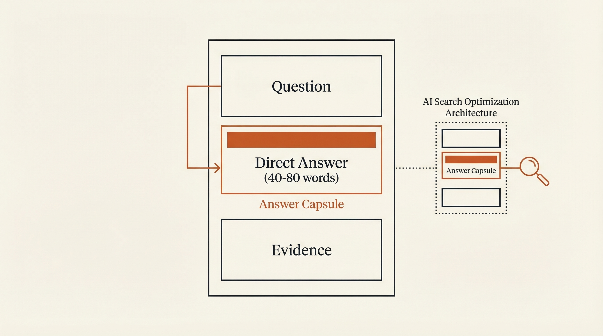

Strategy
Content Architecture for AI
The Answer Capsule Formula — the core unit of AEO content that AI systems are built to extract.

The Formula
Part 1
The Lead Line
1–2 sentence direct conclusion. State the answer before the explanation. No preamble.
Part 2
Structural Support
3–5 bullet points with mechanisms or criteria. Parallel structure. Each bullet stands alone.
Part 3
Verifiable Evidence
One data point or named source. Makes the capsule citable. Increases citation rate 37%.
67%
higher AI citation rate for brands publishing weekly vs. monthly
Use interrogative architecture — structure content around questions AI is likely to ask. Start H2/H3 headers with "What is...", "How does...", "Why does..."
Tables outperform paragraphs for data. AI systems extract tabular data at a 2.3× higher rate than equivalent prose.
Target entity density of 2–3 named entities per 100 words.
Builds E-E-A-T: Named authors with credentials and photos, real business address, consistent publication history, sameAs schema linking to authoritative sources.
Destroys it: Anonymous content, no author attribution, AI-generated text without human review signal, inconsistent entity data across platforms.
65% of AI citation targets are content revised within the last 12 months. 18 months is the effective cutoff — content older than that needs refreshing, not replacing.
Weekly publishers receive 67% more citations than monthly publishers. The cadence matters more than the volume.